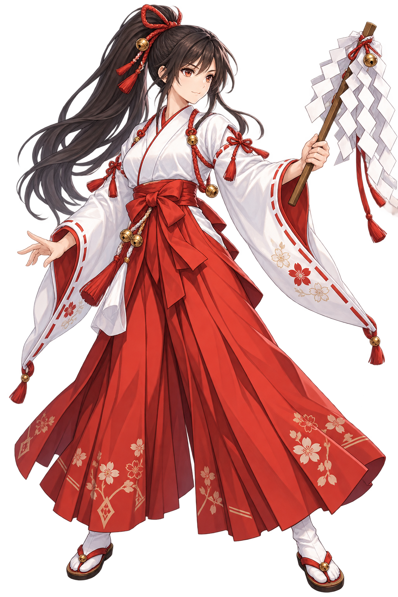

SHRINE GROUNDS · PREPARATION
⛩
宵の境内
装備と力を確かめてから、修練へ。
COURSE 01
初級コース
レベル 1〜100 の敵がランダムに出現。
戦いを重ね、素材を集めて装備を強化しよう。
敵レベル1 — 100
今日の修練日本の妖怪たちとのコマンドバトル敵の予兆を見て、攻めるか守るかを選ぼう。

SHRINE MAIDEN旅の巫女
記録はこのブラウザーに自動保存されます準備ができたら、いつでも修練へ
SHRINE · EQUIPMENT
装備を選ぶ
品物を選び、内容を確認してから装備します。
持っている装備
御
SELECTED ITEM
装備を選択してください
選んだ装備の性能と装着先をここで確認できます。
現在の武器 木の御幣現在のお守り なし
SHRINE · INVENTORY
持ち物
修練で集めた素材と装備品を確認します。
所持素材0 個
所持金0 文
収集した素材
SHRINE · ENHANCEMENT
装備を強化
強化する能力を選ぶと、必要な素材と文が表示されます。
鍛
TRAINING GROUNDS · 01
初級コース
敵の目安 レベル 1〜100
⛩ 境内・宵の刻
体力
注
修練の合間
体力と気力を確かめ、次の敵に備えよう。
境内へ戻って装備を整えることもできます。
敵の様子をうかがっている
戦いはいつでも中断できます連勝 0
体力30 / 30
気力10 / 10
行動を選ぶ
気力 10 / 10修練の記録
RECENT—ここに戦いの記録が流れます。
宵ノ社 — 終わりなき修練のはじまり